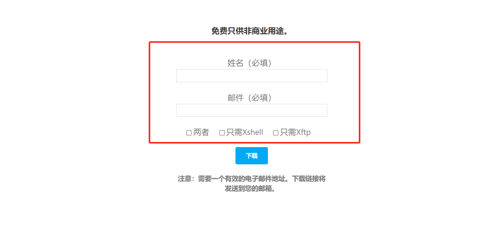
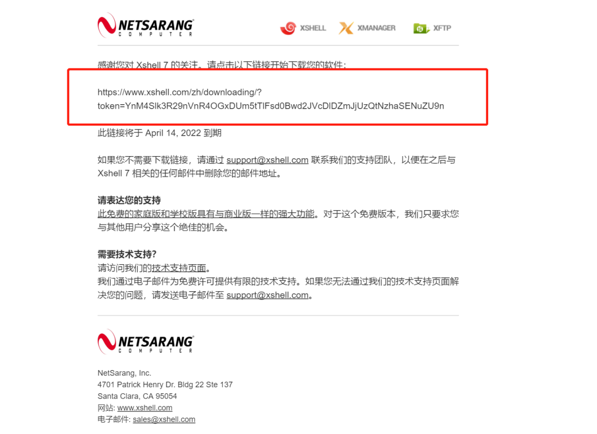
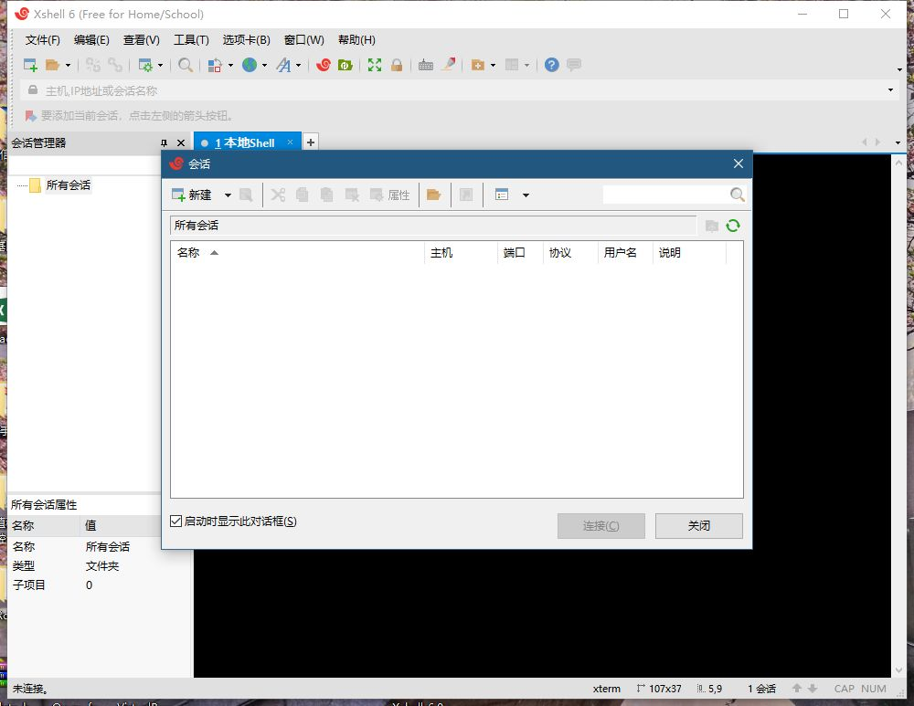
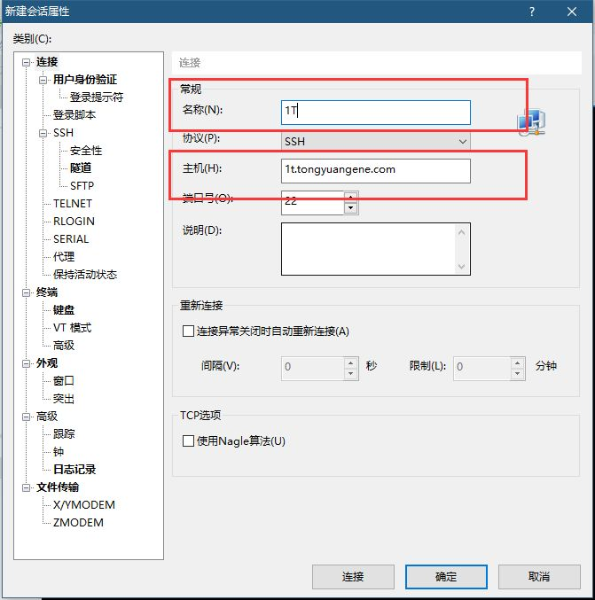
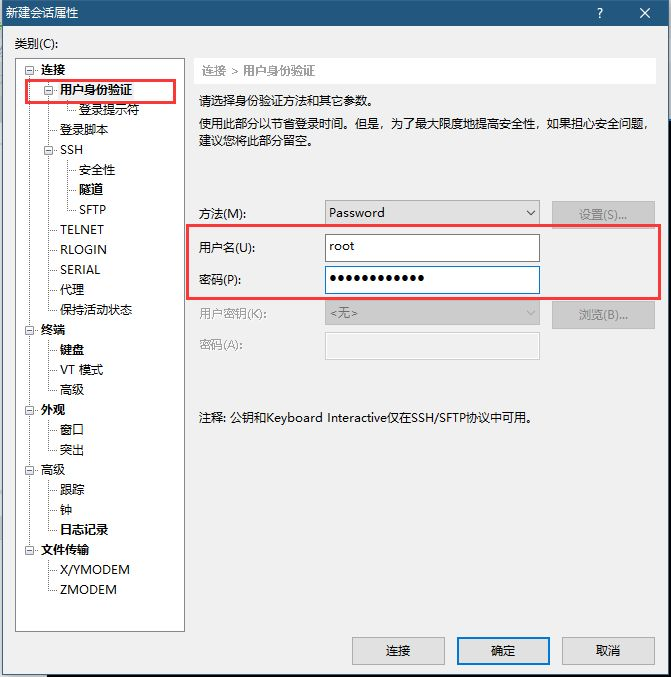
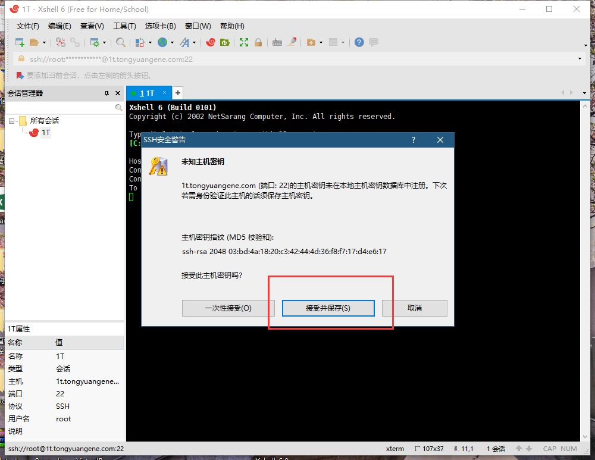
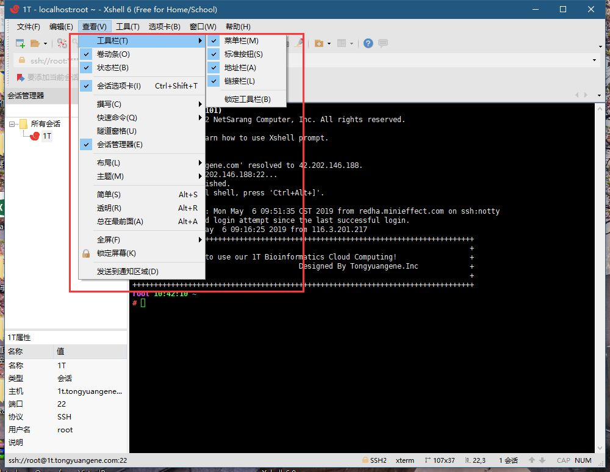
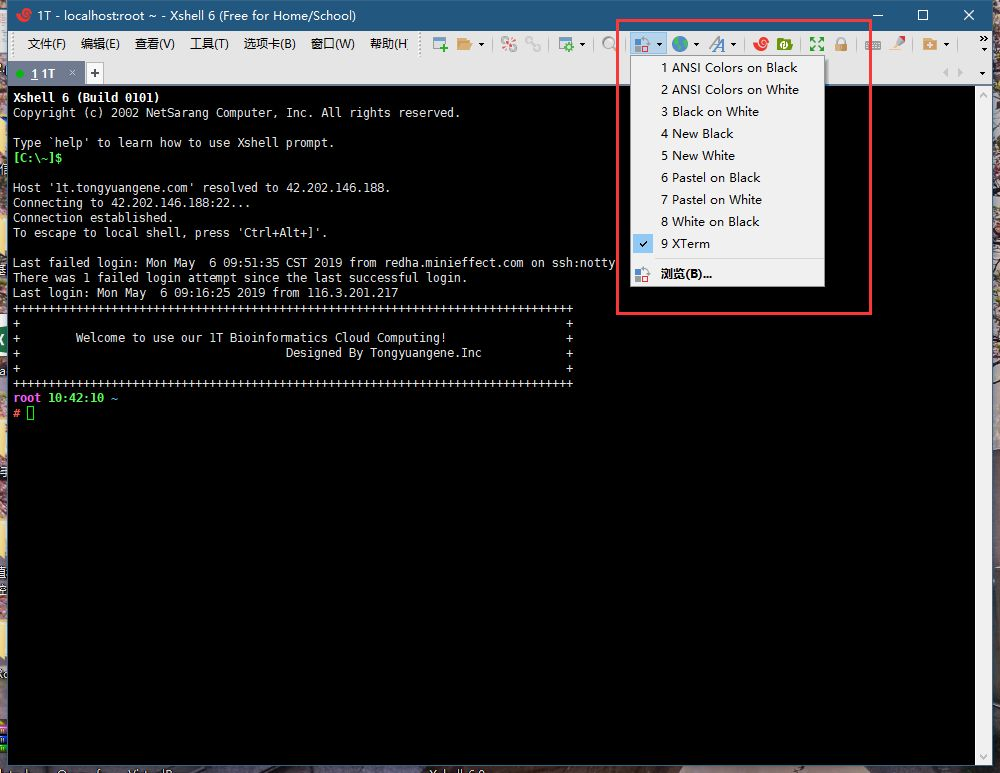
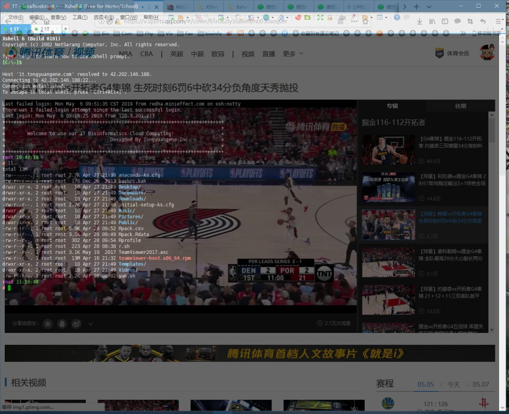
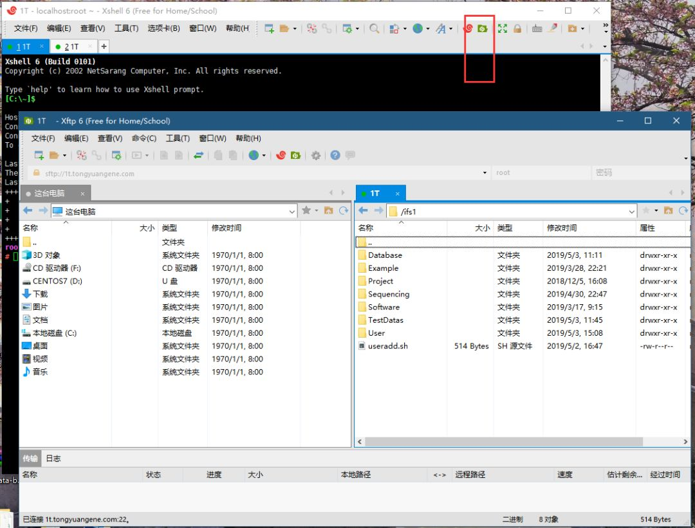

2.2 xshell使用教程
xshell是非常流行的服务器连接工具，功能强大，界面美观。不过只支持windows系统。与之类似的还有mobaxterm，termius，putty等等。xshell是付费工具，不过提供了家庭和校园版，可以免费申请使用。之前的版本只允许最多登录四个窗口，新版本取消了这个限制，但是退出后会有提示。如果不嫌弃这个提示，可以下载使用。
免费申请下载
xshell + xftp套件是收费软件，不过提供了家庭和校园版可以免费使用。只需要到下面网站提交邮箱即可。
找不到网站，可以使用bing搜索关键字“xshell free for home school”即可找到。
- bing搜索

2 打开网站
https://www.xshell.com/zh/free-for-home-school/

3. 填写邮箱

4.获取下载地址

安装使用
1. 软件安装
强烈建议安装到默认目录。现在免费版本退出后，会有一个提醒。如果嫌比较麻烦，可以购买付费版本使用。xftp情况与之类似。

2. 登录账号
需要有一个登录账号，包括IP地址，端口号，用户名和密码。
第一次打开软件，会自动弹出创建会话窗口。

3. 选择新建会话
在名称中设置一个别名，便于区分不同主机，下面主机部分填写正确IP地址。

4. 输入账户密码

5. 设置不间断连接
由于服务器为了安全，一段时间客户端不进行操作就会主动断开，可以在这里进行设置。

6. 关闭响铃
响铃有时候比较讨厌，最好选择关闭

7. 关闭x11
免费版本不支持图形显示，可以在隧道里关闭转到x11，否则会提示购买xmanager。或者也可以自己配置xming，用来使用xdisplay。

8. 完成登录
这样就完成了登录设置，选择接受并保存密码，以后就可以直接登录了。第一次登录会提示保存密钥，选择“接受并保存”即可。

当出现如下界面，表示登录成功了

xshell设置
1 调整视图
默认界面并不是最佳视图，可以进行调整。

2 主题设置
还可以进行主题设置，例如调整前景色与背景色等。

3. 自动复制粘贴设置
在命令行模式下，需要经常使用鼠标进行复制粘贴长路径，一般习惯是鼠标左键进行选中，右键进行粘贴，xshell默认鼠标中间进行粘贴，如果不习惯这样的行为，可以进行设置。

4. 设置透明图
xshell还支持透明图设置，可以设置透明度大一些，这样可以边用腾讯视频观看NBA直播，边进行工作了。

传输文件
如果本机已经安装了xftp，可以在xshell中直接调用xftp进行文件传输，非常方便。
